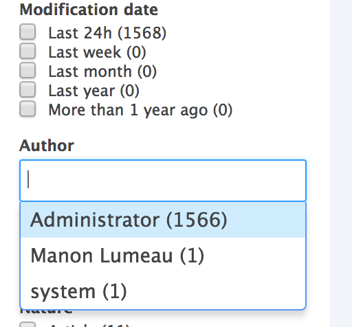
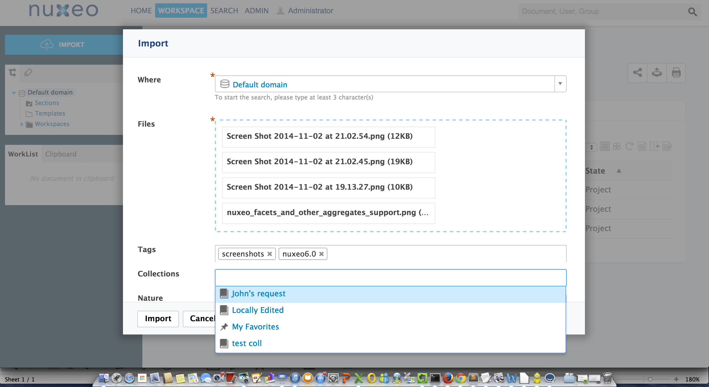
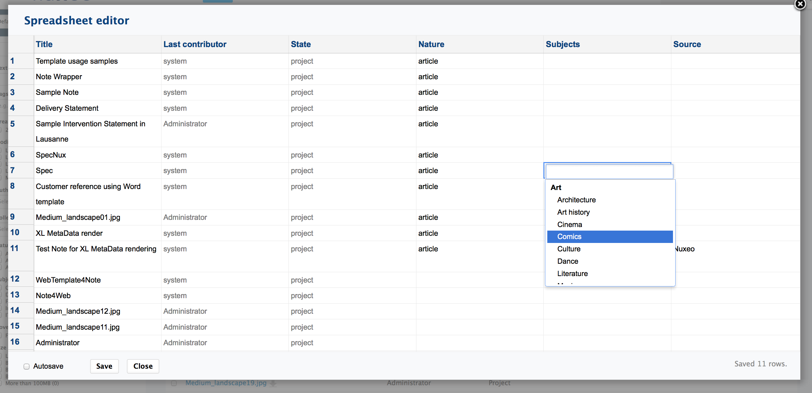

Nuxeo Platform 6.0 Release Notes
For Users
New search tab
All the search experience has been grouped in a new tab called “search”, for which the thumbnail mode has been greatly improved and that provides a nice search experience, with aggregates support, ability to edit columns of the result and then to save searches the search. It is possible to provide multiple search filters, and they can be hidden or displayed depending on the profile of the user.

Facets and Other Aggregates Support
Results of searches are now categorised into facets that help the user to quickly focus on what she is looking for. It is also possible to display count of documents that fit preselected ranges of values.

Faster Quick Search
Quick search now relies on select2, providing a much better feeling!
Bulk Creation
You now have a bulk import action in the main interface, with ability to set metadata, tags and collections right at the import time for all the documents that are dropped. The bulk edit also now supports the collections and tags interface.

Spreadsheet Edit
A new add-on “Spreadsheet” allows to have a spreadsheet like user interface for bulk-editing the metadata, with ability to select and drag the values.

Drive Edit
Nuxeo Drive can be used for “live editing” a document, in replacement of Nuxeo Live Edit, which is deprecated. Documents being live edited are going to a special Drive folder called Lively Edited.
Metadata Edit from Nuxeo Drive
It is possible to edit a metadata from the Desktop interface on Windows, by clicking on a right click “Nuxeo Drive” action that displays a pop up so as to allow editing of metadata associated to the type of the document that holds the binary. A few other actions are also made available: link to the document in the web application, locking, following.
Updated Picture Generation Resolution
Default picture transformations sizes have been increased to 1200 max for medium, 350px for small, 150 px max for thumbnail, following evolution of the digital industry!
Simplified ACLs
Negative permission has been removed beside the action of blocking inheritance (Deny Everything Everyone). This important change of behaviour can be set back with a property (TODO), but pay attention that negative permissions are not compatible with using Elasticsearch or MongoDB.
Look & Feel
A huge work has been done on the look&feel. Beside the global appearance that has been totally reviewed many details has been taken care of. It now uses background images for a better rendering. Buttons on content views are hidden as long as nothing is selected. Main action of most of the forms has a different caller for making it easy to be found.
For Developers
Elasticsearch Integration to the Core Distribution
Previously distributed as an additional package, Elasticsearch is integrated to the core distribution. By default it starts in an embedded mode, and can also be configured so as to dialog with an external Elasticsearch cluster. All documents are indexed with Elasticsearch. It is possible to disable the service. Only Search tab leverages Elasticsearch index in the default distribution, but you can activate it on any page provider by modifying a property in nuxeo.conf, ex:
Audit Service Based on Elasticsearch
A new implementation of the audit service has been made on top of an elastic search index. This provides greater performances which was necessary when audit has millions of entries, and more power in terms of defining what fields are stored.
Support of Facets and Other Kind of Aggregates on Page Providers and Content Views
Page Provider now integrates aggregates support and content view leveraging such kind of page providers can be configured via Nuxeo Studio easily. That way you can build search interfaces with terms, ranges and histograms filters. Many use cases have been taken into account: support of dates, specific widgets for users, directories, documents.
New Download Servlet
A new download servlet is available for documents that are not bound to a specific document. This new servlet is used by the Download File operation so as to get this operation working even with big files.
Collection Synchronisation
You can synchronize collections with Drive. Feature is not yet enabled for the user by default. You still need to add the action by contribution, as we are experimenting the feature before making it generally available.
REST API
ParentId Ref
parentRef id has been added to the json response.
Use Elasticsearch index on Query Endpoint
The query endpoint now uses a named page provider who can be configured to hit Elastiscsearch index.
Parameters for Content Enricher contribution
Content enricher extension point now accepts parameters. Some new content enricher classes were added that makes use of this new capability: UserPermissions and Vocabulary.
CMIS Implementation Evolutions
- ACLs are now implemented
- Rendition filters
- ecm:pos is exposed in CMISQL, so as to handle correctly ordered folders
Automation: Execution Flow Operations
The list of operations allowing to launch other chains for loops (loop on blobs, loop on documents, loop on arbitrary lists) has been cleaned up. Idea is to have on all those operations support for transaction management, so as to be able to easily design scalable and robusts automation chains.
JSF2
Content Application Platform (CAP) and all the plugins have been migrated from JSF 1.2 to JSF 2 and the latest stable release of Richfaces: 4.5. A migration tool has been implemented for helping you migrate your custom code base. That will be necessary when you plan to upgrade your Nuxeo Platform instance to 6.0.
Improvement of Content Views Configurability
You can now control the display of the slideshow , the spreadsheet and the edit columns menu at the result layout level. Even better, this area is now a category of action that has access to the content view and properties configured in it for displaying it.
Typed Layout
Layouts now have a type, which allows to define properties that can be used to define on a per instance basis if some given features are supported. We currently use it for result layouts, with two types: listingTable and listingThumbnail
Widget Definition Alias
It is possible to define aliases for a widget definition, so as to override former widget definitions with a newer one without having to duplicate that definition. Ex: - document_listing_ajax -> table_listing - search_listing_ajax -> table_listing
documentMode with Fallback on Toggleable layouts widget
Toggleable document layout widget now handles a document mode, since modes for documents are not restricted to "create" or "edit" or "view" and can gather layouts for different rendering use cases (like the drive edit screen), and still need to use "edit" or "view" mode for render. Furthermore, a logic of fallback has been added when the given mode has not been contributed.
Dev Mode: Display of Page Structure

In Development mode, you can display the structure of your page : layouts, widgets, actions, just select the object and display its properties. This makes it a great tool for getting inspiration from the default application for your own project.
Multi-navigation Category of Actions
The placeholder for adding virtual navigations is now part of Nuxeo CAP. You don’t need to depend of Virtual navigation for adding elements there.
Custom Headers in the Webapp
A custom header has been added: "X-UA-Compatible" with the value "IE=10; IE=11" so as to better control behaviour on Internet Explorer on supported versions. The way this header has been added benefits from a new extension point that allows to contribute additionnal headers.
UserWorkspace Improvements
It is now possible to override the behaviour of user workspace creation.
Incremental Update for Integer fields
Some document fields can now be updated at the storage level using atomic increment/decrement operations. This is needed for instance to allow concurrent delta updates of fields without losing information. A typical use case is the quotas. See http://jira.nuxeo.com/browse/NXP-15103 for more details.
Directory Low Level Access Restriction
When contributing a directory declaration, it is now possible to add READ and WRITE restrictions to specific groups.
Configure Mail Creation with Automation
The Nuxeo Platform Mail module has been moved out of the default product and now lives as a marketplace package called "Nuxeo Imap Connector". Additionnaly, its configurability has been improved as there is now a way to customise the mail creation logic just using an automation chain.
Changes in Features Layout
There were some big changes in the way features are distributed. Nuxeo DM is a deprecated assembly. You shoud now start systematically from Nuxeo CAP and add addition packages. Faceted Search has been deprecated and exists as a separated package. Virtual Navigation is in a separated package. Tags support has been integrated to Nuxeo CAP. Open Social is deprecated and exits now in a separate marektplace pacakge. DAM package contains all the imaging-* addons, and brings Picture, Video and Sound types.
For Administrators
User and Groups Providers and Authentication Mode Configuration
A wizard is available both at set up time and in the Admin Center. This wizard allows to configure the way Nuxeo Platform will fetch users and groups: in an ldap directory, active directory or a SQL database. It also enables to configure the user attribute mapping.
AES Binary Store Encryption Mode
It is possible to use an AES algorithm to encrypt binaries before storing them in the binary store. See Configuring Encryption Documentation page.